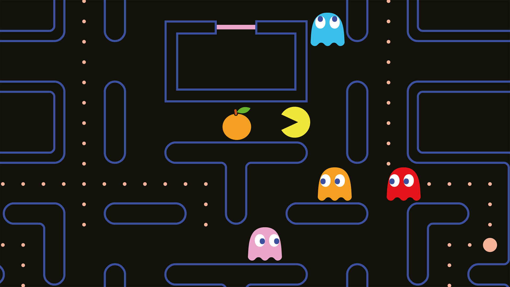

For anyone born in the late 90's or early 2000's will tell you that this was one hands down one of the best games ever created.
Some of the games we used to play when we were younger include;
Welcome to my game site!!
Check out this nostalgic link, This the world's biggest pacman ever created Enjoy that link
You could play the games for hours without stopping like we used to do in arcades, only now it's better. You can play it online for free for as long as you like.
